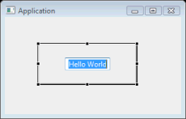

Directly editing widget text in the Design View
To quickly edit the text property a component, select the component in the Design View, and hit the Space key to reveal an edit box in which you can set the component's text property.

Adding multiple widgets of the same type
Multiple widgets of the same type may be added to the Design View by holding down the Ctrl key when selecting the widget in the Palette.
Editing properties of multiple widgets at the same time
When multiple controls are selected, all of their shared properties are listed in the Property Pane. If not all the selected controls have the same value for a property, the property editor in the Property Pane will be blank.
Configuring the Palette
The Palette Manager dialog allows the toolkit-specific palette to be fully configured. Categories, and entries may be added, edited, rearranged and removed.
Editing advanced widget properties
By default, the
Property Pane displays normal properties. To edit expert
properties (shown in italics) click the Show advanced
properties
 button to reveal them.
button to reveal them.
Reverting a widget property to its default value
To quickly revert a property to its default value, select the
property in the Property
Pane and hit the Delete key or click
Restore default value
 button.
button.
Hiding code from the parser
Code can be hidden from the parser by enclosing it in code hiding tags. This can be useful, if you need to add some complex dynamic code to your layout that can't be parsed by the tool.